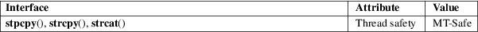

stpcpy, strcpy, strcat − copy or catenate a string
Standard C library (libc, −lc)
#include <string.h>
char
*stpcpy(char *restrict dst, const char
*restrict src);
char *strcpy(char *restrict dst, const char
*restrict src);
char *strcat(char *restrict dst, const char
*restrict src);
Feature Test Macro Requirements for glibc (see feature_test_macros(7)):
stpcpy():
Since glibc 2.10:
_POSIX_C_SOURCE >= 200809L
Before glibc 2.10:
_GNU_SOURCE
stpcpy()
strcpy()
These functions copy the string pointed to by src, into a string at the buffer pointed to by dst. The programmer is responsible for allocating a destination buffer large enough, that is, strlen(src) + 1. For the difference between the two functions, see RETURN VALUE.
strcat()
This function catenates the string pointed to by src, after the string pointed to by dst (overwriting its terminating null byte). The programmer is responsible for allocating a destination buffer large enough, that is, strlen(dst) + strlen(src) + 1.
An implementation of these functions might be:
char *
stpcpy(char *restrict dst, const char *restrict src)
{
char *p;
p =
mempcpy(dst, src, strlen(src));
*p = '\0';
return p;
}
char *
strcpy(char *restrict dst, const char *restrict src)
{
stpcpy(dst, src);
return dst;
}
char *
strcat(char *restrict dst, const char *restrict src)
{
stpcpy(dst + strlen(dst), src);
return dst;
}
stpcpy()
This function returns a pointer to the terminating null byte of the copied string.
strcpy()
strcat()
These functions return dst.
For an explanation of the terms used in this section, see attributes(7).

stpcpy()
POSIX.1-2008.
strcpy()
strcat()
C11, POSIX.1-2008.
stpcpy()
POSIX.1-2008.
strcpy()
strcat()
POSIX.1-2001, C89, SVr4, 4.3BSD.
The strings src and dst may not overlap.
If the destination buffer is not large enough, the behavior is undefined. See _FORTIFY_SOURCE in feature_test_macros(7).
strcat() can be very inefficient. Read about Shlemiel the painter.
#include
<err.h>
#include <stdio.h>
#include <stdlib.h>
#include <string.h>
int
main(void)
{
char *p;
char *buf1;
char *buf2;
size_t len, maxsize;
maxsize =
strlen("Hello ") + strlen("world") +
strlen("!") + 1;
buf1 = malloc(sizeof(*buf1) * maxsize);
if (buf1 == NULL)
err(EXIT_FAILURE, "malloc()");
buf2 = malloc(sizeof(*buf2) * maxsize);
if (buf2 == NULL)
err(EXIT_FAILURE, "malloc()");
p = buf1;
p = stpcpy(p, "Hello ");
p = stpcpy(p, "world");
p = stpcpy(p, "!");
len = p − buf1;
printf("[len
= %zu]: ", len);
puts(buf1); // "Hello world!"
free(buf1);
strcpy(buf2,
"Hello ");
strcat(buf2, "world");
strcat(buf2, "!");
len = strlen(buf2);
printf("[len
= %zu]: ", len);
puts(buf2); // "Hello world!"
free(buf2);
exit(EXIT_SUCCESS);
}
strdup(3), string(3), wcscpy(3), string_copying(7)